This manual explains how to use every part of Novus Ordo, the professional crypto trading terminal: the market terminal, the Quant desk, the Strategy Lab and its bot builder, the crypto swarm, and the wallet and exchange connections that link it to your accounts. It is written in plain English. Where a technical term is unavoidable, it is explained where it first appears and again in the glossary at the back.
Each chapter starts with what a part of the terminal is for, then shows how to use it step by step. Function codes — short names you type on the command line, such as VAR or BOT — appear in a box like this so you can find them on screen.
How to read the screenshotsThe screenshots in this manual were taken from the real application running on its built-in market simulator and on sample paper-trading data. Prices, balances and results shown in them are illustrations, not real performance.
Designed and constructed by
Quincy Gininda
Novus Ordo — its concept, design, trading systems and this manual — is a construction by Quincy Gininda.
Exchange, wallet and service names mentioned in this manual (Hyperliquid, Binance, Bybit, OKX, Coinbase, Kraken, Bitget, KuCoin, Luno, Deribit, Phantom, MetaMask, Rabby, Telegram, Yahoo Finance) belong to their owners and are used only to describe how Novus Ordo connects to them. Novus Ordo is independent of them.
Important risk notice
Trading cryptocurrencies, and especially leveraged perpetual futures, carries a high risk of loss, including the loss of all money deposited. Novus Ordo is software: it is not financial advice, an investment adviser or a broker, and it does not hold your money. Backtests and forecasts describe the past and estimate probabilities; they do not guarantee future results. Use paper trading first, start small, and only trade money you can afford to lose. See chapter 11 for the full notice.
Contents
Table of contents
Chapter 1
Welcome to Novus Ordo
One terminal for the serious crypto trader: read the market, model it, build and test strategies, and let an autonomous swarm trade them under strict risk control.
What Novus Ordo is
Novus Ordo is a desktop trading terminal for Windows. It connects directly to the major crypto exchanges, shows their order flow in real time, gives you institutional quantitative models, lets you build and backtest trading bots without writing code, and runs an autonomous team of trading agents — the crypto swarm — on your own exchange account.
Everything runs on your computer. Your exchange keys are encrypted on your machine and never leave it; the terminal talks to the exchanges directly.
The four modes
Mode
Open with
What it is for
Markets
F1
Reading the market: prices, order flow, footprint charts, liquidity, funding, open interest, news. Chapter 3.
Strategy Lab
F2
Building, testing and deploying strategies: the bot builder, research runs on published strategies, the backtest builder. Chapter 5.
Quant desk
F3
Institutional risk and portfolio models: value at risk, volatility forecasting, CAPM, the efficient frontier, the Kelly criterion, regimes, delta hedging and a neural network. Chapter 4.
Crypto swarm
Ctrl+2
The autonomous trading team and your accounts: the Command Center, deployed strategies, the order ticket, wallets and alerts. Chapter 6.
Markets, the Strategy Lab and the Quant desk are the three workspaces of the Terminal (Ctrl+1). The Crypto swarm is a separate view. The two meet in one place only: the strategies you deploy from the Strategy Lab into the swarm.
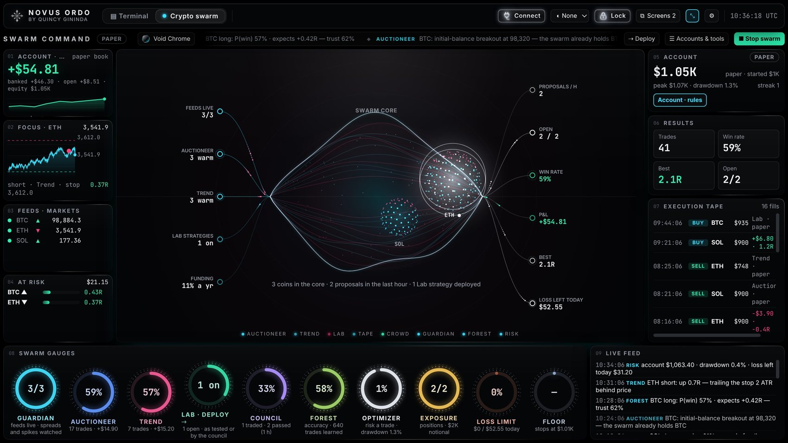
The crypto swarm's Command Center: the swarm core in the centre, the account on the left and right, the gauges along the bottom.
Who it is for
Active traders who want to see what is really happening in the market — who is buying, who is selling, where the liquidity sits — rather than price alone.
Systematic traders who want to test ideas on years of data before risking money, with honest statistics that say when an idea has no edge.
Anyone who wants automation with control: bots that trade only within limits you set, start on paper, and report every decision.
What you need
A Windows 10 or Windows 11 computer (64-bit) and an internet connection.
For live trading: an account on a supported exchange — Hyperliquid for the crypto swarm (chapter 7 explains how to fund it), or any of the exchanges in chapter 7 for the order ticket and bots.
For notifications on your phone (optional): a Telegram account.
Chapter 2
Getting started
Install the terminal, unlock it, and find your way around the screen in a few minutes.
Installing
Novus Ordo comes in two forms. Use one of them, not both.
Download
How to use it
Zip (recommended) NovusOrdo-…-win-x64.zip
Extract it once to a folder such as C:\Novus Ordo (not inside the zip viewer), then run Novus Ordo.exe. Pin it to the taskbar. It opens in seconds.
Portable NovusOrdo-…-portable.exe
A single file you can run from anywhere. It unpacks itself on every launch, so it starts more slowly, especially while Windows Defender scans it.
First launch on WindowsIf Windows SmartScreen shows "Windows protected your PC", choose More info → Run anyway. This appears for new applications that are not yet widely downloaded.
The lock screen and your ledger key
Novus Ordo opens on a black lock screen with the emblem and the prompt ENTER LEDGER KEY. While it waits, the terminal loads in the background — the database, the key vault, the exchange connectors and the market feeds — and lists each item in the bottom-right corner as it arrives.
Type your 8-digit ledger key. The terminal opens as soon as the eighth digit is entered.
Until the key is entered, nothing private is available: API keys, trading, bots, wallets and Telegram stay sealed by the desktop process itself.
Five wrong attempts lock the input for 30 seconds, doubling after each further miss.
To change the key: ⚙ Settings → Ledger key. You need the current key; the new one must be 8 digits and not a simple pattern.
🔒 Lock on the top bar returns to the lock screen whenever you leave the computer. Market data and running bots keep working underneath, and the lock screen shows how long the terminal has been locked and what is running.
Finding your way around
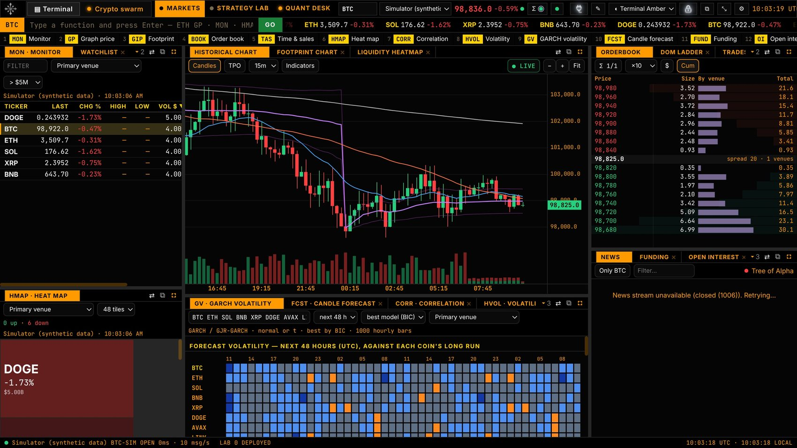
The terminal: views and workspaces on the top bar, the command line and quote tape, the function keys, then the panels.
Top bar — the two views (▤ Terminal and Crypto swarm), the three workspaces (MARKETS, STRATEGY LAB, QUANT DESK), the current coin and venue, the live price, 🔌 Connect, the theme, ⧉ Screens, 🔒 Lock and ⚙ Settings.
Command line — type a function code and press Enter. Put a coin first to switch the market at the same time: ETH GP opens the price graph for ETH, SOL BOOK the order book for SOL. Suggestions appear as you type; pick one with ↑/↓. Type HELP for every function.
Function keys — under the command line, the most-used functions of the current workspace, numbered 1 to 10. Click one to open it.
Quote tape — the most traded markets, scrolling, with their 24-hour change.
Panels — every function opens as a panel. Panels sit in tab groups; drag a tab to rearrange, drag the gaps to resize.
Status line — at the bottom: the feed and its speed, the Strategy Lab's state, UTC and local time.
Keyboard shortcuts
Keys
Action
Ctrl+1 / Ctrl+2
Switch between the Terminal and the Crypto swarm view
F1F2F3
Markets, Strategy Lab, Quant desk
Ctrl+K or `
Jump to the command line
↑↓ then Enter
Choose a suggestion on the command line
Esc
Leave the command line; close a drawer or dialog
Double-click a tab bar
Maximise that panel group; again to restore
Layouts, themes and several screens
✎ Layout unlocks the layout: drag panels by their tabs onto another panel to stack them or onto an edge to split; × closes a panel; + Add panel adds one. Layouts save automatically.
⇄ on any tab bar moves that tab to another workspace or into its own window.
⧉ on any tab bar pops the panel out into its own window. ⧉ Screens on the top bar lists every screen and window: send any window to any screen as Fill, Full (full screen) or Float. From any view — the crypto swarm included — Open any tool in its own window opens any function on another monitor. ⇤ Back to the terminal on a pop-out returns it.
Themes: Terminal Amber (black and amber), Workspace, Eikon Blue, Graphite and Paper, from the top bar. Charts follow the theme.
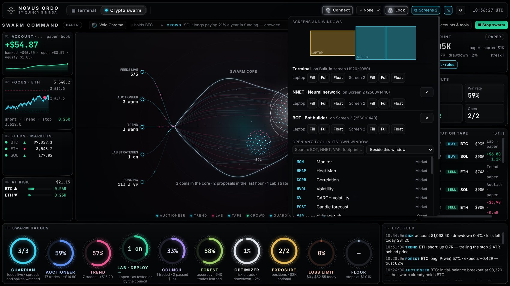
⧉ Screens: the crypto swarm on one screen, the Quant desk's neural network and the bot builder on another.
Start safelyEverything that trades starts in paper mode — real prices, simulated money, fees and slippage counted. Keys stay read-only until you tick Allow trading. Run on paper first, then on an exchange testnet, then live with a small amount.
Chapter 3
The market terminal
Markets (F1) shows what is happening in the market right now — and who is doing it.
Choosing a market and venues
Coin — type it on the command line (ETH then Enter) or pick it on the top bar. Every panel follows the coin.
Primary venue — the exchange whose order book and trades the main charts show (for example Binance Futures). Choose it on the top bar.
Σ aggregate — add other venues to see their trades combined with the primary's: the tape, cumulative delta and footprint then show the whole market, not one exchange.
Supported venues: Binance (futures and spot), Bybit, OKX, Hyperliquid, Coinbase, Kraken, Bitget, Bitfinex and Deribit (options), plus any of more than 100 exchanges through CCXT. A built-in Simulator produces a realistic synthetic market for learning and testing; it is clearly labelled.
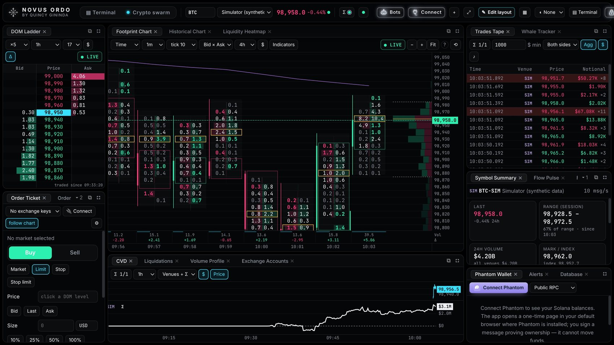
The order-flow layout: the depth ladder (left), the footprint chart (centre), the tape and market summary (right), cumulative delta below.
Price and order-flow functions
Code
Function
What it shows and what it is for
MON
Monitor
The quote board: last price, change, range, volume, funding and open interest for your coins. Your first look at the day.
HMAP
Heat map
The whole market as tiles — size by volume, colour by change. Spot where money is moving at a glance.
GP
Graph price
Candles or market profile (TPO) with VWAP and moving averages, any timeframe. The main price chart.
GIP
Footprint
Each candle broken into prices with the volume bought and sold at each: bid × ask, delta and imbalances. Shows whether buyers or sellers are in control inside a candle.
LHM
Liquidity heat map
Resting orders in the book over time, with trades on top. Find where large orders wait and whether price respects them.
BOOK
Order book
The composite order book across venues.
DOM
Depth ladder
The price ladder with resting size, traded volume and delta at each price. Click a level to send its price to the order ticket.
DPTH
Depth chart
Cumulative bid and ask depth: how much it takes to move price.
TAS
Time & sales
Every trade across venues, sized and coloured; filter by size to see only the large ones.
CVD
Cumulative delta
Buy minus sell volume over time, per venue. Divergence between price and delta warns of weakness.
FLOW
Flow pulse
Buy against sell notional over 30 seconds to 15 minutes.
BLCK
Block trades
Large prints and net whale flow.
LIQ
Liquidations
Forced closures of leveraged positions, long against short. Cascades often mark turning points.
VP
Volume profile
Volume at each price and the value area (where 70 % of trading happened).
Derivatives, volatility and market context
Code
Function
What it shows and what it is for
OI
Open interest
Open positions per venue. Rising price with rising OI means new money; with falling OI, positions closing.
FUND
Funding
Funding rates, their yearly rate and the basis. High positive funding means longs are crowded.
OMON
Options
Deribit option trades, implied volatility and the put/call balance.
SPRD
Venue spread
Each venue's price against the primary.
CORR
Correlation
Correlation matrix of the coins, beta to bitcoin and volatility.
HVOL
Volatility
Realised volatility over a day, week and month, the term structure and its rank.
GV
GARCH volatility
The volatility forecast for the hours ahead as a heat calendar (see chapter 4).
FCST
Candle forecast
The next candle's expected range and its odds of closing up, with its track record on unseen data.
DES
Description
The market summary: price, 24-hour statistics, funding, open interest, long/short ratio, basis.
SCRN
Screener
Every perpetual on a venue, sortable.
WL
Watchlist
Your symbols on any venue.
TOP
Top news
Real-time crypto headlines by coin.
WEI
World markets
Stocks, indices, FX and futures from Yahoo Finance.
How to read the order flow
Start wide.MON and HMAP: which coins are moving, on what volume.
Find the levels.VP for the value area and the point of control (the busiest price); LHM for large resting orders.
Watch the aggression.GIP footprint and CVD: a breakout with buyers lifting the offer and delta rising is real; a new high on falling delta is suspect.
Check positioning.FUND, OI and LIQ: crowded funding and stacked liquidations show where a squeeze could come from.
Act or alert. Send a price from the DOM to the order ticket, or set an alert with ALRT.
History and the local database
The terminal records the live trades of the markets you watch into a local database, so charts open with history already filled in; any gap since you last ran it is filled from the exchange. Old trades are cleaned out automatically after the retention period (3 days by default). The DB panel shows the database size, each recorded market and the retention, and exports a market's trades to CSV.
Chapter 4
The Quant desk
Quant desk (F3): the models institutions use to measure risk, size positions and build portfolios — each explained, each one keystroke away.
Every Quant desk panel follows the coin on the board, and the tables cover a list of coins you choose (type them in the coins box, separated by spaces). Each capability below is described by what it is, what it is used for and how to use it.
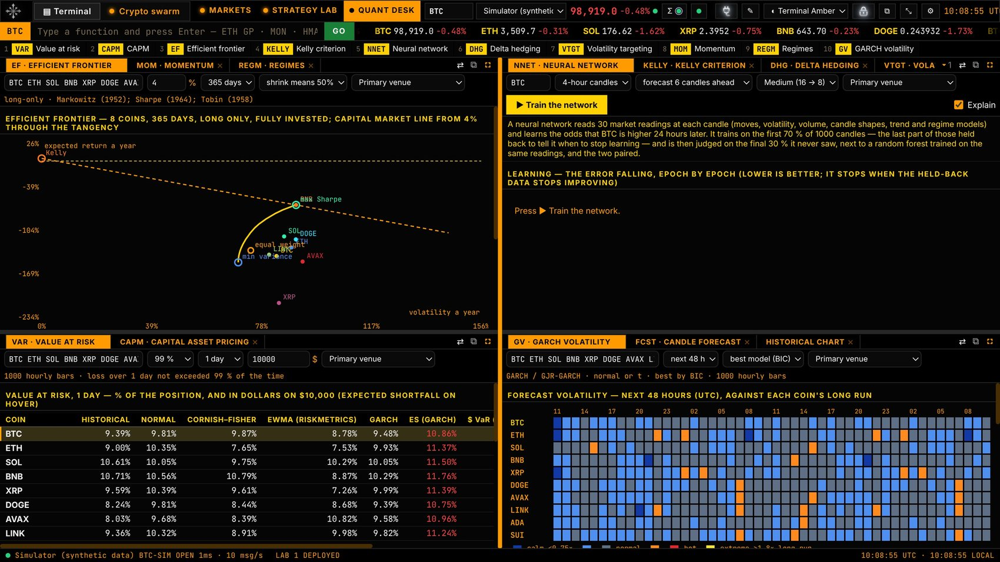
The Quant desk: efficient frontier, value at risk, GARCH volatility and more, side by side.
Risk: value at risk and volatility
VAR Value at risk and expected shortfall
What it is
The loss that should not be exceeded 95, 99 or 99.5 % of the time over an hour, a day or a week — as a share of the position and in dollars — by five methods: historical, normal, Cornish–Fisher (allowing for skew and fat tails), EWMA (RiskMetrics) and GARCH. Expected shortfall shows the average loss on the days that are worse.
Used for
Knowing how much a position can realistically lose on a bad day before you take it, and comparing coins by risk. A portfolio line shows what spreading across coins saves.
How to use
Enter your coins, choose the confidence (99 % is standard) and horizon, and your position size in dollars. Check the backtest table: each method's past forecasts against what happened — Kupiec says whether it was breached the right number of times, Christoffersen whether breaches cluster. Trust the methods that pass.
GV GARCH and GJR-GARCH volatility
What it is
A volatility forecast: GARCH models how volatility clusters (calm follows calm, storms follow storms); GJR-GARCH adds the extra jump in volatility after falls. Shown as a heat calendar of the hours ahead against each coin's long-run level, with the news-impact curve.
Used for
Seeing a storm coming before it arrives: widen stops, cut size, or wait when the forecast is hot; trade breakouts when volatility is expanding.
How to use
Choose the model (best by BIC, GARCH or GJR-GARCH) and the horizon. Blue hours are calmer than normal, orange and red hotter.
VTGT Volatility targeting and position sizing
What it is
Volatility measured seven ways (close-to-close, Parkinson, Garman–Klass, Rogers–Satchell, Yang–Zhang, EWMA, GARCH) and the position size that runs at a target volatility on your account.
Used for
Keeping risk steady: a smaller position when the market is wild, a bigger one when it is calm. A chart compares buy-and-hold with the same coin volatility-targeted.
How to use
Set your target (for example 40 % a year) and account size; read the position for each estimator. A Kelly calculator is included.
DHG Delta hedging and option greeks
What it is
Black–Scholes price and greeks for a call, put or straddle on the coin, priced at the GARCH forecast, realised volatility or your own; the hedge to hold on the perpetual now; a strike ladder; and a backtest of selling or buying the option daily and hedging it every 1, 4, 12 or 24 hours.
Used for
Understanding options risk and the volatility premium, and knowing exactly how much of the coin to hold against an option position.
How to use
Choose the option (strike, days, size, bought or sold) and the volatility to price it with; read the delta and the hedge; compare hedging frequencies in the backtest.
Portfolio: CAPM, efficient frontier and Kelly
CAPM Capital asset pricing model
What it is
Each coin measured against the market (bitcoin or an equal-weight index): beta (how much it moves with the market), Jensen's alpha and its t-statistic (return beyond what its beta explains), R², the return CAPM expects for that beta, Treynor and information ratios, Sharpe and the security market line.
Used for
Telling a coin's own performance from simply riding the market, and finding coins that add something beyond bitcoin.
How to use
Choose the market and the period. A coin above the security market line did better than its risk implied; a high R² means it mostly follows the market.
EF Efficient frontier (Markowitz)
What it is
The long-only mixes of your coins with the best expected return for each level of risk, with the minimum-variance portfolio, the maximum-Sharpe (tangency) portfolio, the capital market line, equal weight and the Kelly portfolio — and their weights.
Used for
Deciding how to split money across coins rather than guessing.
How to use
Enter the coins and the risk-free rate; choose how much to shrink expected returns toward the average (past returns are noisy, so 50 % is a sensible start). Read the weights in the table.
KELLY Kelly criterion
What it is
The leverage that grows capital fastest in the long run for each coin, and half of it; the growth curve by leverage (it peaks at full Kelly and falls back to nothing at twice it); the growth-optimal portfolio under a leverage cap; and Kelly on the crypto swarm's own trade record.
Used for
Sizing bets so that you grow without risking ruin. Most professionals use half Kelly or less.
How to use
Read full and half Kelly per coin; for a strategy, enter its win rate and average win in R to get its Kelly bet.
Market behaviour: momentum and regimes
MOM Momentum
What it is
Returns from a week to six months, the month's move in its own standard deviations, the 60-day trend t-statistic, the Kalman-filter slope, a composite signal and each coin's rank against the others.
Used for
Finding the coins with the strongest and weakest trends — the basis of trend-following strategies.
How to use
Sort by the composite signal; a high trend t-statistic means the trend is clear, not noise.
REGM Regimes
What it is
Whether a coin is trending, mean-reverting or random (Hurst exponent, variance ratio, Ornstein–Uhlenbeck half-life and s-score), and whether it is in a calm or turbulent state (a two-state hidden Markov model with the odds hour by hour).
Used for
Matching the strategy to the market: trend strategies in trending regimes, dip-buying in mean-reverting ones, smaller size in turbulence.
How to use
Read the character column for each coin and the odds of turbulence before choosing a strategy.
FCST Candle forecast
What it is
A machine-learning forecast of the next candle from candle shapes, volatility and momentum: its expected high and low and the odds it closes up, with its record on data it never saw.
Used for
A second opinion on the next move — trusted only as far as its track record shows.
How to use
Compare its hit rate on unseen data with simple guessing before giving it weight.
Artificial intelligence: the neural network
NNET Neural network
What it is
A small neural network (two hidden layers) trained on a coin's candles to forecast whether price will be higher a chosen number of candles later. It reads around 30 market measurements at each candle and stops learning when its latest training data stops improving, so it does not memorise.
Used for
Testing whether a learned model finds anything in a market — compared fairly with a random forest on the same inputs, and with the two paired.
How to use
Choose the coin, candle size, how far ahead to forecast and the network size; press Train the network and watch the error fall. Read the table "on the 30 % it never saw": a model is only useful if it is right more often than guessing. The panel also shows what the network looks at most and how well its odds held up.
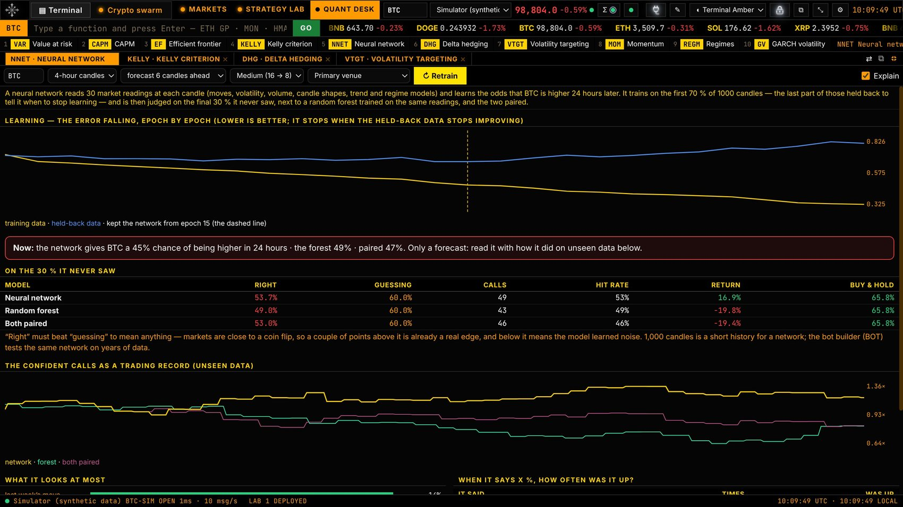
NNET: the learning curve, the forecast now, and the results on unseen data against a random forest and the two paired.
The same models power the Strategy LabGARCH, value at risk, volatility targeting, Kelly sizing, the efficient frontier, regimes, the Kalman trend and the neural network are all available as building blocks in the bot builder (chapter 5).
Chapter 5
The Strategy Lab
Strategy Lab (F2): build a strategy, test it honestly on years of data, and deploy it to the crypto swarm.
The Lab's screens
Code
Screen
What it does
BOT
Bot builder
Build a bot block by block in plain English, backtest it and deploy it. The easiest way in.
RSCH
Research
Tests the whole library of published strategies on years of history, mixes them, and ranks the five best with an honest verdict.
LIB
Strategy library
Every rule and filter, the research papers behind it, and why it should work.
BT
Backtest builder
Build a strategy by hand from the library and test it.
DEPL
Deployed
The strategies trading in the crypto swarm: on or off, who decides their trades, and their record.
The bot builder, step by step
The bot builder is a canvas of eight connected blocks. Click a block and its options open in the panel on the right, each explained in plain English (tick Explain). A block can hold several choices.
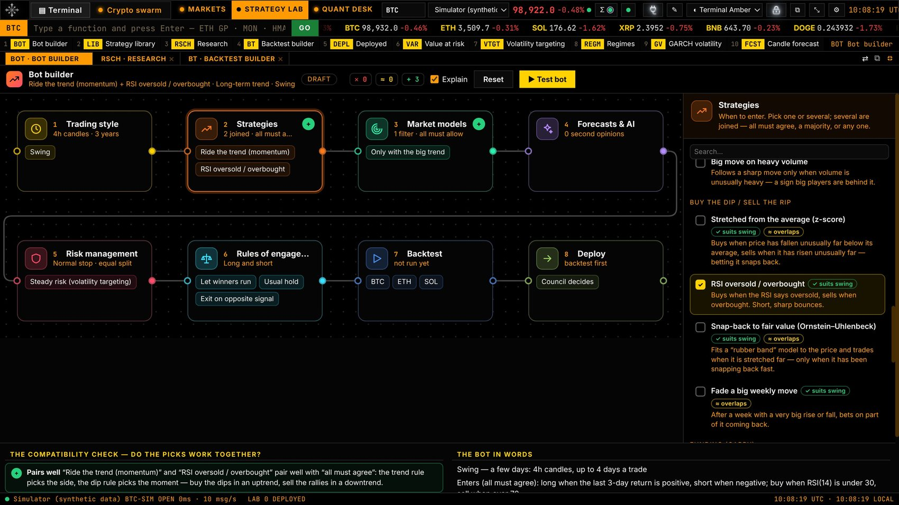
The bot builder: eight blocks on the canvas, the selected block's options on the right, the compatibility check underneath.
Trading style — scalping (hours), intraday, swing (a few days), one-week trades, position (weeks to months) or long-term hold (up to a year). The style sets the candle size, look-backs, holding time, stop width and years of history for every other block.
Strategies — the entry rules: trend following, breakouts, buying dips and selling rallies, timing and seasons, funding, and AI (neural network, random forest, linear and next-candle forecasts). Pick one or several; several are joined by all must agree, majority vote or any one.
Market models — when the bot may trade: with the big trend, trending or ranging markets (ADX), statistical regimes (variance ratio, Hurst, hidden-Markov), calm or stormy volatility (GARCH), activity, trading hours and funding crowding. Every filter you pick must allow a trade.
Forecasts & AI — second opinions that must agree, and an AI decision maker that learns from the bot's own past trades which signals to skip: the decision forest, the neural network, or both paired. It is kept only if it improves results on unseen data.
Risk management — steady risk (volatility targeting), a daily loss cap (value at risk), half Kelly, storm-aware GARCH stops, a bitcoin hedge; two sizing rules can be combined (the smaller size wins). Also the stop width and how money is split across coins (equally, by calm, minimum variance or the efficient frontier).
Rules of engagement — long and short or one side only; let winners run or take profit at 1.5, 2 or 3 times the risk; holding time; whether an opposite signal closes the trade.
Backtest — choose the coins and press Run backtest (or ▶ Test bot at the top).
Deploy — available only after a backtest (see "Deploying a strategy").
The compatibility check
Every pick is checked against the others as you make it, and each option is tagged before you choose it:
✕ Clash — the picks work against each other: for example a trend rule only allowed in a ranging market, or a breakout rule only allowed when it is quiet.
≈ Overlap — they say the same thing: two trend rules, or a second opinion from the same model as the strategy.
+ Pairs well — they add to each other: a trend rule with a dip rule when all must agree ("buy the dips in an uptrend"), or the neural network paired with the forest.
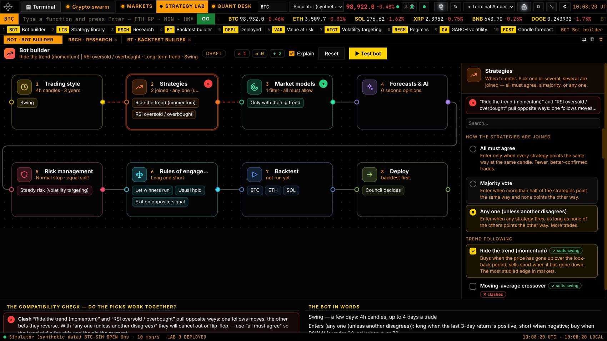
A clash flagged: a trend rule and a dip rule joined by "any one". The wires turn red and the check explains how to fix it.
Reading a backtest
Every bot is built on the first 70 % of the history and judged on the last 30 % it never saw, with fees and slippage. The result comes in plain words:
Tile
What it means
Verdict
Looks good, Maybe, or Not yet — and why.
Return a year vs Buy-and-hold
The bot's yearly return on unseen data, against simply holding the same coins.
Worst drop
The biggest fall from a high before recovering (maximum drawdown).
Win rate and Trades
The share of winning trades and how many it took.
Sharpe ratio
Return for the risk taken: above 1 is good, above 2 excellent.
Chance it's luck
How often pure chance would look this good; under 5 % is convincing.
Chance of a losing run
Shuffling its trades 2,000 times: how often the account ends lower.
Below the tiles, Measured on the data shows each strategy alone and together, how two strategies actually related (correlation and how often they agreed), what each filter added, and how each AI decision maker did. If the bot did much better on the data it was built on than on new data, the Lab says so: that is a sign of over-fitting.
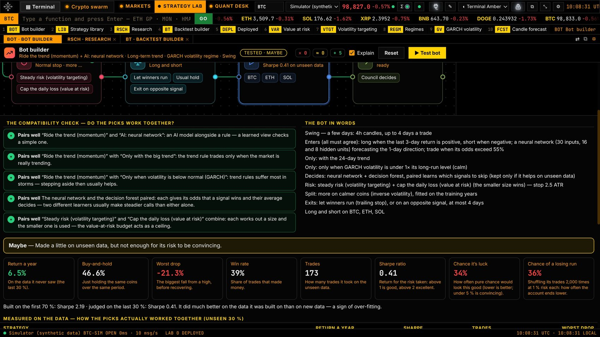
A tested bot: the compatibility check, the bot in words, the verdict and the result tiles.
Research runs
Open RSCH. Choose the coins, the timeframe, the years of history and how many mixes to try.
Press Run research. The Lab downloads the history (cached for next time), tests every published rule, mixes the best with filters, exits and sizing, and sends the finalists to the unseen data.
Each finalist faces the out-of-sample Sharpe ratio, the deflated Sharpe ratio (corrected for how many strategies were tried), a random-entry test, a trade-shuffle test, a regression on buy-and-hold and simulated markets with no edge.
The top five get a verdict: EDGE, PROMISING or NO EDGE — said plainly when nothing passes.
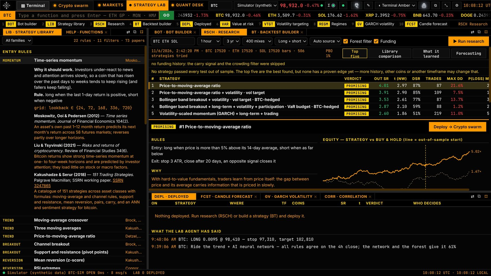
Research: the top five with their verdicts, the selected strategy's rules and its equity against buy-and-hold.
Deploying a strategy
From the bot builder's Deploy block, from Research (Deploy → Crypto swarm), or from the swarm's deploy gate.
Choose who decides its trades:
Council decides — the strategy proposes; the swarm's council votes and the forest can veto. Safer while a strategy is unproven.
Trade as tested — the strategy takes the signals it was tested on; the council's votes are recorded as advice. For strategies that held up on unseen data.
Either way, Guardian (spreads, volatility spikes) and Risk (daily loss, drawdown and the size of every trade) can always stop a trade.
In DEPL or the swarm's deploy gate: switch each strategy on or off, change who decides, or remove it. Each strategy keeps a record of its signals, trades, and any signals the council blocked — followed anyway, so you can see whether the council saved or cost money.
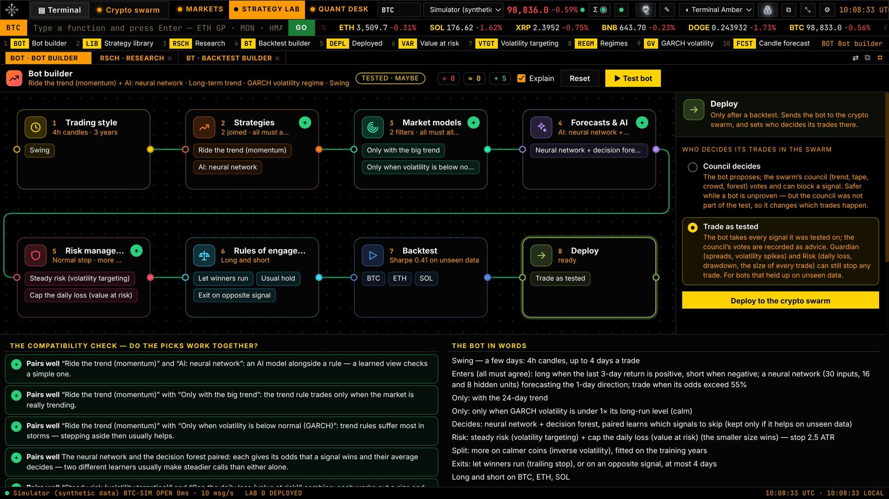
The Deploy block: choose who decides the bot's trades, then deploy to the crypto swarm.
Honest limitsA backtest, however careful, describes the past. Markets change and published edges fade. Out-of-sample results on one history are one draw: more coins, more years and another timeframe make a verdict firmer. Fills in fast markets can be worse than tested. Always run a new strategy on paper first.
Chapter 6
The crypto swarm
A team of agents that trades crypto perpetual futures on Hyperliquid — every decision debated, every trade sized and guarded.
How the swarm works
Three kinds of agent propose trades; five more vote on them. A trade happens only when no one vetoes it and the weighted vote is strong enough (unless a deployed strategy is set to trade as tested — then only Guardian and Risk can stop it).
Agent
Role
What it does
Auctioneer
proposes
Intraday auction market theory: the session's value area, initial-balance breakouts, the 80 % rule back into value.
Trend
proposes
Time-series momentum: the 20-, 60- and 120-day trends vote; entries on hourly breakouts in their direction.
Lab
proposes
Your strategies deployed from the Strategy Lab.
Tape
votes
Aggressive buying and selling in the last seconds and the order book: for or against.
Crowd
votes
Funding: against a crowded side that pays a lot to hold, for when the other side pays.
Guardian
veto
Stops any trade when the spread is too wide or the market spikes.
Forest
votes, veto once trusted
A decision forest that learns from every trade (taken or refused) the odds of a loss, scratch, win or big win.
Risk
veto, sizes
The compounding risk manager: it decides the size of every trade and enforces the account's limits.
The Command Center
Open the swarm with Crypto swarm on the top bar or Ctrl+2.
Top — the swarm's talk scrolling past, ⇢ Deploy, ☰ Accounts & tools and Start / Stop swarm.
Left — the account and its profit curve; the coin in focus with its chart, entry, stop and target; the feeds; capital at risk.
Centre — the swarm core — what the agents read flows in from the left; each coin is a sphere of particles that grows as its signals heat up; results flow out to the right. Click a coin to focus it.
Right — equity, peak and drawdown; results; the execution tape of every fill.
Bottom — the gauges — Guardian, Auctioneer, Trend, Lab · deploy, Council, Forest, Optimizer, Exposure, Loss limit and Floor; then the live feed of every proposal and vote.
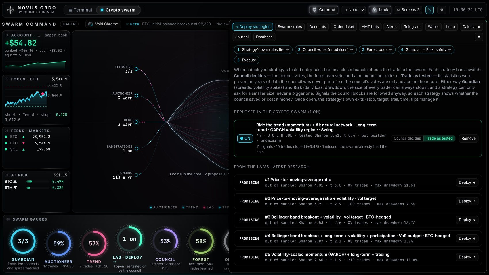
The deploy gate: the decision chain, a deployed strategy set to "Trade as tested" with its record, and the Lab's latest research ready to deploy.
Running the swarm: paper, then live
Paper first. The swarm starts on a paper account trading Hyperliquid's real prices, with fees and slippage counted. Press Start swarm and watch the council work.
Check the rules.Account · rules (or SWCF): the coins, which agents may propose, risk per trade, leverage limits, daily loss limit, the floor.
Deploy strategies from the Strategy Lab (chapter 5) or the deploy gate.
Go live. Connect Hyperliquid (chapter 7), tick Allow trading, then in the rules choose Live and your key, and start the swarm. A dialog asks you to confirm. Every live position gets a stop on the exchange itself.
Stop at any time.Stop swarm stops new trades (open positions keep their exchange stops). The top bar's kill switch stops every bot; Stop & close all closes positions at market.
Risk control and compounding
Every trade risks 1 % of what the account is worth now (between 0.25 % and 2 % after adjustments): profits make the next trade bigger, losses smaller.
Leverage is a consequence of the stop, capped at 3× per coin and 3× for all positions together, on isolated margin. One position per coin.
After 20 closed trades, size follows the record (a quarter of the Kelly bet). Strong odds from the forest add size; weak odds take it off.
Three-quarter size 10 % under the account's high; half size 20 % under.
No new trades for the day after losing 5 %; a pause after three losses in a row.
The floor: no trades under 70 % of the starting balance; once the account reaches 1.25× its start, the floor rises to 80 % of its high and only goes up — profits get locked in.
No system is always in profitThese rules keep losses small and survivable and let wins compound. They cannot remove market risk.
The swarm's tools
Code
Tool
What it is for
TKT
Order ticket
Market, limit, stop and stop-limit orders on any connected exchange, with safety limits (chapter 8).
PORT
Portfolio
Balances, positions, open orders and fills on your connected accounts; cancel or close.
AMT
AMT bots
Auction-market-theory bots you run yourself, one per market: scalp, intraday, growth, order-flow hybrid, adaptive and daily trend styles, each with paper or live, backtest and training.
ALRT
Alerts
Price and order-flow alerts.
TG
Telegram
Your Telegram bot: trade cards and commands (chapter 7).
WALL
Wallet
Phantom wallet balances and activity (chapter 7).
LUNO
Luno lane
Crypto against South African rands on Luno: daily trend bots.
CALC
Calculator
Position size, risk/reward and liquidation price.
NOTE
Journal
Timestamped trading notes.
DB
Database
Recorded trades, retention and CSV export.
Trade reports on your phone
With Telegram connected, every swarm trade sends three messages, each with a chart: the setup (entry, stop, target, the potential against the risk, the odds and the council's votes), managing (the first decision after entry, such as moving the stop to break-even) and the result (profit or loss in dollars and R, how long it was held, fees, and a verdict in plain words).
Chapter 7
Wallets and connections
Connect exchanges, wallets and Telegram — safely. Everything starts from 🔌 Connect on the top bar.
Connection options
Connection
What it is used for
Hyperliquid
Crypto perpetual futures — the crypto swarm's exchange, the order ticket and bots. Your account is a wallet; its money is USDC. No documents, no IP whitelist.
Luno (ZAR)
Buying and selling crypto with South African rands; the Luno lane's daily trend bots.
Balances, positions and orders through the portfolio and the order ticket; AMT bots.
Any CCXT exchange
More than 100 further exchanges, through the same vault.
Telegram bot
Trade cards and commands on your phone.
Phantom wallet
Read-only view of a Solana wallet's balances and activity (WALL).
Solana RPC (optional)
A private Solana connection for heavy wallet use; the app works without it.
How keys are kept safe
Keys are encrypted with your operating system's key store (Windows DPAPI) before they reach the local database. The screen only ever shows masked values.
Keys are used only by the desktop process; they never leave your computer except to sign requests to that exchange.
Every key is read-only until you tick "Allow trading" on it. A key marked testnet / sandbox only trades the exchange's testnet.
Never enable withdrawals or transfers on any exchange key. The terminal never needs them.
For Hyperliquid, the terminal uses an API wallet key, which can trade but can never withdraw. It refuses your main wallet's own key.
Hyperliquid: funding and connecting
Three rules that protect your money
Never send USDC from an exchange straight to Hyperliquid: it credits the wallet that sent it — the exchange's — and the money is lost. Always go through your own wallet.
Never give anyone, or any app, your wallet's recovery phrase or main private key.
Deposit at least 5 USDC each time; smaller deposits are not credited.
Get a wallet of your own — the Rabby or MetaMask browser extension on the computer that runs Novus Ordo is the most reliable. Keep the recovery phrase on paper.
Buy USDC on your exchange, plus about $2 of ETH for network fees.
Withdraw both to your own wallet on the Arbitrum One network. Send a small test amount first.
Deposit: open app.hyperliquid.xyz in the same browser → Connect → Deposit (5 USDC or more).
Create the API wallet: More → API → name it Novus Ordo → Generate → Authorize API Wallet. Copy the private key: it is shown once.
Connect it: 🔌 Connect → Hyperliquid. Main wallet address = your wallet's 0x… address; API wallet private key = the key you copied. Save, then Test live.
Allow trading when you are ready, then choose Live in the swarm's rules.
Withdrawing is done only on app.hyperliquid.xyz with your own wallet — the terminal cannot withdraw.
Practise firstMake an API wallet on app.hyperliquid-testnet.xyz (its faucet gives free test USDC), tick testnet / sandbox on the key, and run the swarm live against the testnet.
Luno, Telegram and Phantom
Luno (South African rands)
On luno.com (the website): Settings → Security → API keys → Create API key.
Choose the permission that can view balances and place and cancel orders — never one that can send, withdraw or transfer.
Paste the Key ID and Secret into 🔌 Connect → Luno, press Test live, and tick Allow trading only when you want orders placed.
Telegram
In Telegram, open @BotFather, send /newbot, choose a name and a username ending in "bot".
Paste the token into 🔌 Connect → Telegram bot.
Open the Telegram panel (TG), press Start in your bot's chat, then Detect chat and Send test message.
The bot also answers /price, /status and /help — only from your own chat, while the terminal is open.
Phantom wallet
Connect Phantom in the Wallet panel opens a one-time page in your browser, where you approve the connection and sign a message. The terminal verifies the signature and then shows the wallet's SOL and token balances, their value and recent activity. It is read-only: the terminal never sees a private key and cannot move funds.
Chapter 8
Placing orders and managing accounts
The order ticket, the portfolio and the safety rules that protect every order.
The order ticket
Open TKT. Choose the connected key (exchange account) and the market.
Choose the order type: Market, Limit, Stop or Stop limit. Size it in the coin or in dollars, or use 10/25/50/100 % of your free balance.
Options: post-only, reduce-only, time in force (GTC, IOC, FOK) and leverage on derivatives. Clicking a level on the DOM sends its price to the ticket.
Review the confirmation, which shows the full order with a LIVE or TESTNET badge, and send.
Built-in order safety
These rules run in the desktop process, not the screen, so nothing can bypass them:
Rule
Default
A key places orders only after Allow trading is ticked on it
off until you tick it (cancelling always works)
Maximum value of one order
$1,000 (reduce-only and close orders are exempt: they can only shrink a position)
Rate limit
10 orders a minute
Maximum distance from the market price
50 %
Confirmation before sending
on (can be switched off under ⚙ in the ticket)
Testnet keys
never fall back to live
Order log
every attempt — placed, rejected or failed — is recorded
Stops that would trigger immediately, post-only on non-limit orders and reduce-only on spot are refused before they reach the exchange.
Portfolio, calculator, alerts and journal
PORT — balances, positions, open orders and fills; Cancel, Cancel all and Close (reduce-only at market).
CALC — position size from risk, reward-to-risk, and liquidation price before you trade.
ALRT — price and order-flow alerts that pop up on screen.
NOTE — a timestamped trading journal.
Chapter 9
Security and safety
How Novus Ordo protects your keys, your account and your data.
Security at a glance
Protection
How it works
Ledger key lock
An 8-digit key, stored only as a salted digest. Until it is entered, the desktop process refuses keys, trading, bots, wallets and Telegram. Wrong attempts lock input for longer each time.
Encrypted key vault
Exchange keys are encrypted by the operating system's key store before they are stored; the screen shows only masked values; copying a key clears the clipboard after 30 seconds.
Read-only by default
No key can place an order until you tick Allow trading on it.
No withdrawals
The terminal never needs, and never uses, withdrawal permission. Hyperliquid uses an API wallet that cannot withdraw.
Order limits
Order value, rate and distance limits, confirmations and a full order log (chapter 8).
Risk limits
The swarm's daily loss limit, drawdown cuts and rising floor; exchange-side stops on live positions (chapter 6).
Kill switch
One click on the top bar stops every bot.
Local data
Your database, settings and keys live on your computer only.
Good practice
Use a strong, private ledger key, and press 🔒 Lock when you leave the computer.
Create exchange keys with trading permission only; restrict them to your IP address where the exchange offers it.
Keep wallet recovery phrases on paper, offline, and never type them into any application.
Start on paper, then testnet, then live with a small amount; raise size only after a record you trust.
If you think a key has leaked, delete it on the exchange and in 🔌 Connect, and create a new one.
Chapter 10
Troubleshooting
Quick answers to the most common problems.
Common problems
Problem
What to do
"Novus Ordo is already open" or "database is locked"
Another copy is still running or closing. Press Ctrl+Shift+Esc, end every Novus Ordo task in Task Manager, then press Try again or open it again. Your data is safe. Use only one copy (zip or portable, not both).
The window stays blank or black
If it is a graphics-driver problem, the terminal restarts itself in safe mode (no GPU). You can also choose Help → Restart in safe mode. If it persists, send the log (below).
The portable version starts slowly
It unpacks itself on every launch while Windows Defender scans it. Use the zip version for fast starts.
A feed shows "error" or no data
Check your internet connection; some exchanges are restricted in some countries — choose another venue. The terminal reconnects by itself.
An exchange rejects a key
Use Test live in 🔌 Connect: it explains the exchange's error in plain words (wrong permission, IP restriction, clock difference). Never send anyone your key — send the error message.
A key shows "(read-only)"
Tick Allow trading on it in 🔌 Connect.
Hyperliquid won't connect to a phone wallet
Use the Rabby or MetaMask browser extension on the computer instead (chapter 7), or open the site inside the wallet app's own browser.
Windows SmartScreen warning
More info → Run anyway.
The log file
Help → Open log folder shows novus.log, which records start-up timings, any delay of the app and any error. When reporting a problem, send this file — never your keys.
Location on Windows: C:\Users\<you>\AppData\Roaming\novus-ordo\logs\novus.log
Chapter 11
Risk disclosure and terms of use
Please read before trading with real money.
Risk disclosure
Cryptocurrencies are highly volatile. Perpetual futures use leverage: a small move against a position can cause a large loss, and a position can be liquidated, losing all the margin committed to it. Past performance — in a backtest, a paper account or live trading — is not a reliable indicator of future results. Statistical tests and forecasts estimate probabilities; they do not remove risk.
Automated trading carries additional risks: software errors, connection failures, exchange outages, delays and fills worse than expected in fast markets. Monitor live trading, keep limits conservative, and use the kill switch when in doubt.
Not financial advice
Novus Ordo is software that displays market data, runs calculations and executes instructions you configure. It is not an investment adviser, broker, exchange or custodian, and nothing in the terminal or this manual is a recommendation to buy or sell any asset. You are solely responsible for your trading decisions, for the keys and permissions you grant, and for complying with the laws and tax obligations where you live. Exchange availability varies by country; use only services that are permitted for you.
Your responsibilities
Keep your ledger key, exchange keys and wallet recovery phrases secret.
Never grant withdrawal permission to any key used with the terminal.
Test on paper and testnet before trading live; trade only money you can afford to lose.
Appendix A
Function code reference
Every function, by code. Type the code on the command line; put a coin first to switch market (ETH GP).
All functions
Code
Function
MON
Monitor
HMAP
Heat map
GP
Graph price
GIP
Footprint
LHM
Liquidity heat map
BOOK
Order book
DOM
Depth ladder
DPTH
Depth chart
TAS
Time & sales
CVD
Cumulative delta
FLOW
Flow pulse
BLCK
Block trades
LIQ
Liquidations
VP
Volume profile
OI
Open interest
FUND
Funding
OMON
Options
SPRD
Venue spread
CORR
Correlation
HVOL
Volatility
GV
GARCH volatility
FCST
Candle forecast
DES
Description
SCRN
Screener
WL
Watchlist
TOP
Top news
WEI
World markets
Code
Function
BOT
Bot builder
RSCH
Research
LIB
Strategy library
BT
Backtest builder
DEPL
Deployed strategies
VAR
Value at risk
CAPM
CAPM
EF
Efficient frontier
KELLY
Kelly criterion
NNET
Neural network
DHG
Delta hedging
VTGT
Volatility targeting
MOM
Momentum
REGM
Regimes
SWRM
Crypto swarm view
SWCF
Swarm rules
TKT
Order ticket
PORT
Portfolio
AMT
AMT bots
ALRT
Alerts
TG
Telegram
WALL
Wallet
LUNO
Luno lane
CALC
Calculator
NOTE
Journal
DB
Database
HELP
Every function
Appendix B
Glossary
The terms used in the terminal, in plain English.
Terms A to Z
ATR (average true range)
The average size of a candle's range; used to set stops that fit how much a coin normally moves.
Backtest
Running a strategy on past data to see how it would have done.
Beta
How much a coin tends to move when the market moves; beta 1.5 moves 1.5 % for the market's 1 %.
CVD (cumulative volume delta)
Running total of buying minus selling volume.
Delta
In order flow, buying minus selling volume; in options, how much the option's price moves with the coin.
Drawdown
A fall from the account's high before it recovers.
Efficient frontier
The mixes of assets with the best expected return for each level of risk.
Expected shortfall
The average loss on the days worse than the value at risk.
Footprint
A chart showing the volume bought and sold at each price inside each candle.
Funding
Regular payments between long and short holders of a perpetual future, keeping its price near the spot price.
GARCH / GJR-GARCH
Models that forecast volatility from how it clusters; GJR adds the larger reaction to falls.
In-sample / out-of-sample
Data a strategy was built on, and data it never saw and is judged on.
Isolated margin
Each position has its own margin, so it can only lose that margin.
Kelly criterion
The bet size that grows capital fastest in the long run; half Kelly is the common, safer choice.
Leverage
Trading a position larger than the money put up; it magnifies gains and losses.
Liquidation
The forced closing of a leveraged position when its margin runs out.
Neural network
A machine-learning model of connected artificial neurons that learns patterns from data.
Open interest
The number of open futures contracts.
Order flow
The actual buying and selling — who is aggressive, at what prices, in what size.
Over-fitting
A strategy tuned so closely to past data that it fails on new data.
Paper trading
Trading with simulated money at real prices.
Perpetual future
A futures contract with no expiry, kept near the spot price by funding.
POC (point of control)
The price with the most volume traded in a session.
R (risk unit)
The amount risked on a trade; a 2R win made twice what was risked.
Random forest / decision forest
A machine-learning model made of many decision trees that vote.
Sharpe ratio
Return per unit of risk; above 1 is good, above 2 excellent.
Slippage
The difference between the expected price and the price actually filled.
Stop (stop-loss)
An order that closes a trade if price moves against it by a set amount.
Testnet
An exchange's practice environment with free test money.
Value area
The price range where 70 % of a session's volume traded.
Value at risk (VaR)
The loss not expected to be exceeded at a chosen confidence over a chosen time.
Volatility
How much price moves; usually given as a yearly percentage.
Volatility targeting
Sizing positions so the portfolio's risk stays near a chosen level.
Credits
NOVUS ORDO
The professional crypto trading terminal
Conceived, designed and constructed by
Quincy Gininda
The market terminal, the Quant desk, the Strategy Lab and bot builder, the crypto swarm and its agents, and this manual are the work of Quincy Gininda.